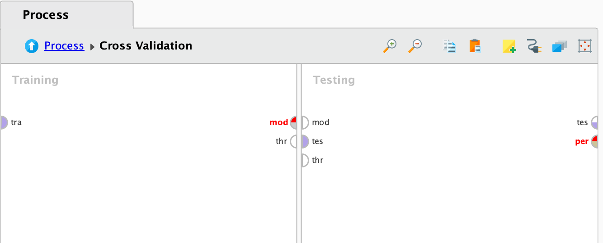
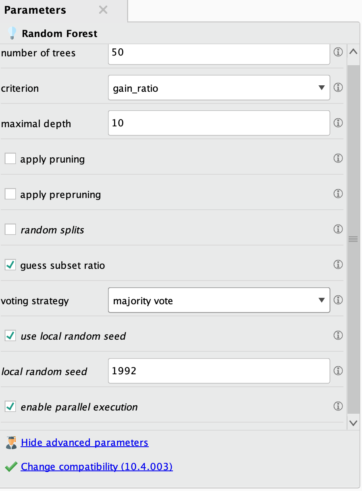
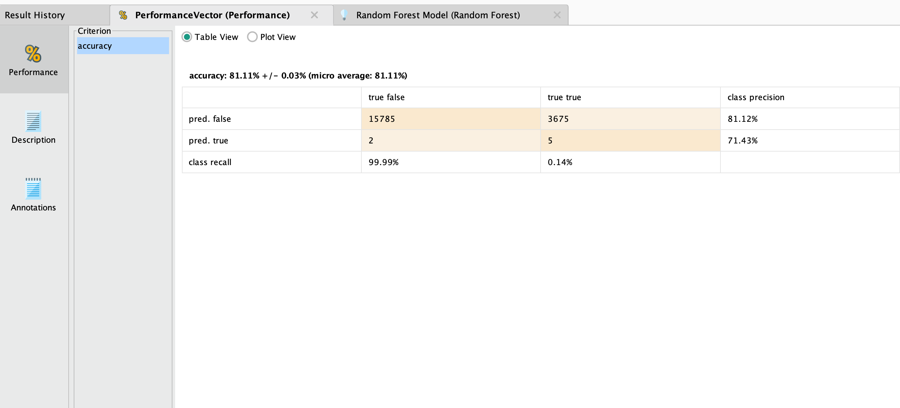

PROYECTO GRUPAL

Introducción al dataset "2019 Airline Delays and Cancellations"
¿Por qué elegimos este dataset?
Elegimos este dataset ya que nos pareció interesante la cantidad de atributos y datos que tenía el dataset, nos generó curiosidad saber cómo limpiar y podar los datos para lograr predecir si un vuelo tiene retraso o se puede cancelar.
Los retrasos y cancelaciones de vuelos afectan diariamente a millones de pasajeros, aerolíneas y aeropuertos. Este dataset permite analizar estos problemas y buscar soluciones basadas en datos.
Es útil para identificar patrones de retrasos y entender los factores que influyen en ellos (por ejemplo, congestión, condiciones climáticas, años de los aviones, etc.)
Nos permite identificar aeropuertos con mayor frecuencia de retrasos y predecir si un vuelo tendrá un retraso significativo (más de 15 minutos) basado en factores históricos y operativos
Este dataset contiene más de 30 columnas y 1.900.000 filas de atributos, de los cuales contienen:
- Características de los vuelos: Horarios, distancias, aerolíneas.
- Factores operativos: Congestión en aeropuertos, capacidad de asientos.
- Condiciones climáticas: Precipitación, viento, nieve, etc.
- Datos históricos: Desempeño de aerolíneas y aeropuertos en situaciones similares.
El análisis de este dataset puede ayudar a mejorar la experiencia del pasajero, optimizar la logística de las aerolíneas y reducir costos relacionados con retrasos y cancelaciones.
Atributos
- MONTH: Mes del vuelo (1-12). Captura cómo los retrasos varían según el mes del año (por ejemplo, meses de vacaciones como diciembre pueden ser importantes para analizar).
- DAY_OF_WEEK: Día de la semana (1 = Lunes, 7 = Domingo). Captura cómo los retrasos varían según el día de la semana.
- DEP_DEL15: Indicador de retraso en la salida mayor o igual a 15 minutos (1 = Sí, 0 = No). Variable objetivo, utilizada para predecir si un vuelo tendrá un retraso significativo.
- DEP_TIME_BLK: Intervalo de tiempo programado para la salida (ejemplo: "0600-0659"). Permite analizar cómo los retrasos varían según la hora del día.
- DISTANCE_GROUP: Grupo de distancia del vuelo (en intervalos, por ejemplo, vuelos cortos o largos). Captura cómo la distancia afecta los retrasos.
- SEGMENT_NUMBER: Número de segmento del vuelo en itinerarios con múltiples trayectos. Útil para analizar vuelos conectados.
- Factores relacionados con las operaciones de vuelo
- CONCURRENT_FLIGHTS: Número de vuelos concurrentes desde el mismo aeropuerto en el mismo intervalo de tiempo. Puede indicar congestión en el aeropuerto.
- NUMBER_OF_SEATS: Número de asientos en el avión. Relacionado con el tamaño del avión y la logística para abordaje y desembarque.
- CARRIER_NAME: Nombre de la aerolínea que opera el vuelo. Permite analizar el desempeño de diferentes aerolíneas.
- DEPARTING_AIRPORT: Código del aeropuerto de salida. Identifica el aeropuerto de origen del vuelo.
- Estadísticas mensuales
- AIRPORT_FLIGHTS_MONTH: Número de vuelos desde el aeropuerto en el mes. Indica la actividad mensual del aeropuerto.
- AIRLINE_FLIGHTS_MONTH: Número de vuelos operados por la aerolínea en el mes. Relacionado con la capacidad operativa de la aerolínea.
- AIRLINE_AIRPORT_FLIGHTS_MONTH: Número de vuelos de la aerolínea desde el aeropuerto en el mes. Combinación de la aerolínea y el aeropuerto de origen.
- AVG_MONTHLY_PASS_AIRPORT: Promedio mensual de pasajeros en el aeropuerto. Indica la actividad general del aeropuerto.
- AVG_MONTHLY_PASS_AIRLINE: Promedio mensual de pasajeros transportados por la aerolínea. Indica el desempeño general de la aerolínea.
- Recursos humanos y aviones
- FLT_ATTENDANTS_PER_PASS: Proporción de asistentes de vuelo por pasajero. Relacionado con la experiencia de los pasajeros y el servicio a bordo.
- GROUND_SERV_PER_PASS: Proporción de personal de servicio en tierra por pasajero. Relacionado con la eficiencia del servicio en tierra (abordaje, equipaje, etc.).
- PLANE_AGE: Edad del avión. Un avión más viejo podría estar asociado con mayor probabilidad de retrasos técnicos.
- Ubicación geográfica
- LATITUDE y LONGITUDE: Coordenadas geográficas del aeropuerto de origen. Ayuda a identificar la ubicación geográfica y sus posibles implicaciones (por ejemplo, clima extremo).
- PREVIOUS_AIRPORT: Aeropuerto anterior antes del vuelo actual. Captura posibles impactos del itinerario anterior en el vuelo actual.
- Factores climáticos
- PRCP: Precipitación (en pulgadas). Clima lluvioso puede contribuir a retrasos.
- SNOW: Cantidad de nieve (en pulgadas). Indicador de condiciones invernales adversas.
- SNWD: Profundidad de nieve acumulada (en pulgadas). Similar a SNOW, pero puede representar acumulaciones previas.
- TMAX: Temperatura máxima registrada (en Fahrenheit). Puede indicar condiciones de calor extremo.
- AWND: Velocidad promedio del viento (en mph). Vientos fuertes pueden afectar los despegues y aterrizajes.
- Datos históricos y de bloques
- CARRIER_HISTORICAL: Información histórica sobre el desempeño de la aerolínea en vuelos anteriores. Indica la probabilidad histórica de retrasos para la aerolínea.
- DEP_AIRPORT_HIST: Desempeño histórico del aeropuerto de salida. Captura cuántos retrasos suelen ocurrir en el aeropuerto.
- DAY_HISTORICAL: Información histórica sobre retrasos para ese día del mes o día de la semana. Útil para capturar patrones estacionales.
- DEP_BLOCK_HIST: Desempeño histórico del bloque horario de salida. Ayuda a entender qué bloques horarios suelen ser más problemáticos.
En base a estos atributos, podremos predecir y analizar la variable objetivo DEP_DEL15
Limitaciones o aspectos a tener en cuenta del dataset
El dataset está limitado a vuelos en Estados Unidos en 2019, lo que puede no ser representativo de patrones globales.
A pesar de tener muchos atributos en nuestro dataset, hay que tener en cuenta los valores faltantes, outliers y valores que se consideran innecesarios o pocos importantes para el desarrollo de esta investigación.
Modelo de machine learning
Este desafío es un problema de clasificación. Queremos clasificar a los diferentes vuelos para saber si tendrá retraso o no.
¿Qué modelo utilizaremos?
Para este caso, utilizaremos el modelo de Random Forest.
Random Forest
El Random Forest es un algoritmo de aprendizaje supervisado que combina múltiples árboles de decisión para resolver problemas de clasificación y regresión. Fue introducido por Leo Breiman y se basa en la técnica de "bagging" (bootstrap aggregating), lo que significa que genera múltiples muestras aleatorias del dataset, construye un árbol de decisión en cada muestra y combina los resultados para obtener una predicción final más robusta.
¿Cómo funciona?
Se generan varias muestras aleatorias del dataset, donde cada muestra se utiliza para entrenar un árbol de decisión independiente. En cada nodo del árbol, se selecciona aleatoriamente un subconjunto de atributos (features) para decidir la mejor división, lo que introduce diversidad entre los árboles. Para clasificación el resultado final es la clase más votada entre los árboles (votación por mayoría).
Aspectos positivos del Random Forest
- Robustez y precisión: Al combinar múltiples árboles, el modelo es menos sensible a los datos de entrenamiento y menos propenso a sobreajustarse (overfitting) en comparación con un solo árbol de decisión.
- Capacidad para manejar datos complejos: Funciona bien con datasets grandes y con alta dimensionalidad (muchos atributos).
- Manejo de atributos categóricos y numéricos: Random Forest puede trabajar con una mezcla de atributos categóricos y numéricos sin necesidad de normalización o estandarización.
- Importancia de los atributos: Proporciona medidas de importancia de atributos que indican cuáles contribuyen más a las predicciones.
- Manejo de datos desbalanceados: Se puede adaptar para problemas desbalanceados, ajustando los pesos de las clases o usando técnicas de balanceo de datos.
- Resistencia a outliers y valores faltantes:
- Los árboles individuales no se ven afectados significativamente por outliers, ya que estos no tienen un gran impacto en la mayoría de los árboles.
- Puede manejar datos con valores faltantes mediante imputación automática.
Aspectos negativos del Random Forest
- Entrenamiento costoso: Entrenar múltiples árboles de decisión puede ser computacionalmente costoso, especialmente con datasets grandes y muchos atributos.
- Memoria y almacenamiento: Los modelos de Random Forest pueden ocupar mucha memoria, ya que almacenan múltiples árboles y sus estructuras.
- Tendencia a sobreajustarse en datasets muy pequeños: Si el número de árboles es muy grande y los datos son limitados, puede haber cierto sobreajuste.
- Ineficiente para datos de alta cardinalidad categórica: Si un atributo categórico tiene demasiados niveles únicos (por ejemplo, nombres de aeropuertos), el modelo puede volverse lento e ineficiente.
¿Por qué utilizar Random Forest y no otro algoritmo?
Analizando las características positivas y negativas del algoritmo, creemos que es el que más se adecúa a nuestro desafío (clasificar si un vuelo se retrasará más de 15 minutos o no).
Si bien hay otros algoritmos que podríamos utilizar, los mismos no se adecúan a nuestras necesidades, por ejemplo:
Árboles de Decisión (Decision Trees)
Los árboles de decisión son fácil de interpretar, muestra las reglas de decisión que llevan a la clasificación. Maneja bien datos categóricos y continuos.
Pero su principal desventaja es que puede sobreajustarse fácilmente, especialmente en datasets grandes. Por ende decidimos evitarlo en este caso.
Igualmente, primero probaremos el dataset con este algoritmo y así comparar los resultados contra el Random Forest.
K-Nearest Neighbors (KNN)
Es simple y efectivo si las clases están bien separadas en el espacio de características y no hace suposiciones sobre la distribución de los datos.
Pero sus principales desventajas es que no escala bien con datasets grandes (como 1.9 millones de filas) y son sensible a valores atípicos y la selección de atributos irrelevantes.
No es recomendable utilizar este algoritmo por el tamaño del dataset y la probabilidad de relaciones complejas.
Regresión Logística
Es simple, eficiente y fácil de interpretar para problemas de clasificación binaria. Funciona bien si las relaciones entre las variables predictoras y la variable objetivo son lineales. Es ideal para establecer una línea base antes de probar modelos más complejos.
Sus principales desventajas es que no maneja bien relaciones no lineales o interacciones complejas entre atributos
Si bien puede servir para tener un acercamiento de clasificación, no es el mas adecuado o preciso para este caso.
Limpieza y preparación de datos
Primero haremos una limpieza manual de algunas columnas de atributos, las cuales consideramos que no son tan significativas o importantes como otros atributos. Eliminaremos las siguientes columnas:
- LATITUDE y LONGITUDE: Aunque interesantes, son redundantes con los códigos de aeropuerto (DEPARTING_AIRPORT) y no añaden información adicional significativa.
- PREVIOUS_AIRPORT: Puede ser relevante solo en vuelos conectados, pero es difícil usarlo consistentemente en todos los vuelos.
- SEGMENT_NUMBER: Solo útil en vuelos de múltiples segmentos, que pueden ser una minoría.
- AVG_MONTHLY_PASS_AIRPORT y AVG_MONTHLY_PASS_AIRLINE: Son indirectamente redundantes con AIRPORT_FLIGHTS_MONTH y AIRLINE_FLIGHTS_MONTH.
- GROUND_SERV_PER_PASS y FLT_ATTENDANTS_PER_PASS: Aunque pueden ser indicadores indirectos de servicio, probablemente no sean relevantes para retrasos.
- PLANE_AGE: Aunque puede haber un impacto, es menos relevante que factores como congestión o clima.
- DISTANCE_GROUP: Aunque puede ser útil en vuelos muy largos o cortos, su relación con retrasos no siempre es directa.
Select Attributes
Para seleccionar o filtrar estos atributos del dataset, vamos a utilizar el operador "select attributes" el cual nos permite seleccionar las columnas que necesitamos.
Tenemos distintos parámetros para este operador.
Type
Este parámetro sirve para saber si los atributos que seleccionaremos serán incluidos o excluidos de nuestro dataset.
Tenemos dos opciones, "Include attributes" solo se mantendrán los atributos especificados. Todas las demás columnas serán filtradas. La segunda opción es "Exclude attributes" el cual elimina los atributos especificados y mantiene todas las demás columnas.
En nuestro caso, utilizaremos "Exclude attributes", ya que nos permite filtrar las columnas que no necesitamos, utilizamos este método ya que las columnas a eliminar son pocas.
Attribute Filter Type
Básicamente define cómo se seleccionarán los atributos que serán incluidos o excluidos, dependiendo de lo configurado en Type
Por ejemplo, podemos seleccionar todos los atributos con el método "All", con el método "Single" podemos seleccionar un solo atributo, con el método "Subset" seleccionamos un conjunto de datos, entre otros.
En esta ocasión, utilizaremos "Subset" ya que nos permite seleccionar una lista de atributos (en este caso es una lista la cual queremos eliminar dichos atributos).
Select subset
En este parámetro, seleccionamos la lista que necesitamos eliminar o filtrar.
Also Apply to Special Attributes
Este parámetro indica si los filtros también deben aplicarse a los atributos especiales, por ejemplo, ID, variable objetivo, etc.
En nuestro caso decidimos no seleccionar este parametro, ya que no debemos filtrar columnas de con atributos especiales.
Luego de seleccionar los métodos correspondientes, nuestro dataset queda con 20 columnas de atributos.
Split data
También, debemos reducir la cantidad de filas del dataset, ya que en rapidminer podemos tener algunos problemas con la cantidad de filas, por ejemplo, al querer visualizar una gráfica, Rapidminer no genera gráficos con más de 1 millón de filas.
Para solucionar el problema mencionado anteriormente en Rapidminer, no es necesario eliminar filas, simplemente utilizamos un split para dividir el dataset.
Este operador funciona para dividir nuestro dataset en diferentes particiones. Para esto tenemos distintos parámetros para modificar el "Split data".
En el parámetro "partitions" podemos definir las particiones que necesitamos, por ejemplo, si queremos dividir el dataset a la mitad, lo hacemos de la siguiente manera:

Simplemente colocamos la proporción del dataset que queremos dividir. En caso de querer dividir el dataset en 70/30, debemos ingresar "0,7" (para la primer partición) y "0,3" (para la segunda partición).
Luego, tenemos el parámetro "Sampling type", el cual tiene diferentes opciones.

Linear sampling
Esta primera opción realiza la división del dataset de forma secuencial, sin mezclar ni alterar el orden de las filas. Si configuramos la división del dataset como un 70/30, el primer 70% del dataset se dividirá y por otro lado el otro 30%. Esto sirve si necesitamos que los datos estén ordenados en base a como están ingresados en el dataset. Este método puede causar sesgos si el dataset está organizado de una manera no aleatoria.
Shuffled Sampling
Es un método para mezclar las filas del dataset. Esto nos sirve por si queremos evitar sesgos en la distribución de las filas. Ejemplo, si configuramos una división de 70/30, se mezcla el 100% del dataset antes de que se haga la partición.
Stratified Sampling
Divide los datos asegurando que las proporciones de las clases (en problemas de clasificación) se mantengan iguales en los subconjuntos. Si el 70% de las filas pertenece a la Clase A y el 30% a la Clase B, el muestreo garantiza que los conjuntos de entrenamiento y prueba mantengan estas proporciones.
Automatic
RapidMiner selecciona automáticamente el método de muestreo más apropiado en función de los datos. Generalmente, utiliza Shuffled Sampling a menos que detecte la necesidad de preservar un orden. Se recomienda este método en caso de no estar seguro sobre que método utilizar.
| Caso | Sampling Type recomendado |
|---|---|
| Datos con orden cronológico | Linear Sampling |
| Datos balanceados o sin orden | Shuffled Sampling |
| Problemas de clasificación | Stratified Sampling |
| No estás seguro | Automatic |
¿Qué utilizaremos para este caso?
En este caso, nos encontramos con un problema de clasificación, ya que en base a los datos obtenidos por las aerolíneas, debemos generar un modelo que pueda predecir si el vuelo tendrá retraso o no. Por ende, debemos seleccionar el método "Stratified Sampling", ya que sirve para problemas de clasificación como este.
En el parámetro de "Partition" utilizaremos una división de 99/1 por el momento, ya que tenemos muchas filas en nuestro dataset, entonces utilizaremos el 1% del dataset para hacer las pruebas adecuadas. También nos sirve para dividir el dataset en datos de entrenamiento y datos de testing.


Luego de esta partición, el dataset se divide en dos: el 99% (1,927,252 filas) y el 1% (19,467 filas).
Numerical to Binomial
Utilizaremos este operador para transformar la variable objetivo a binomial, de esta manera nos servirá para ralizar pruebas más adelante.
En el parámetro "Attribute filter type" debemos seleccionar "single" ya que por el momento vamos a seleccionar la variable objetivo.
En el parámetro "Attribute" seleccionamos DEP_DEL15/(Variable Objetivo)
Los demás parámetros los dejamos por defecto ya que no son relevantes para este caso.
Set Role
Utilizamos este operador para asignar un "rol" específico a la variable objetivo como "Label". Esta es la variable que el modelo intentará predecir basándose en los valores de las demás columnas.
¿Por qué es importante hacer esto?
En algoritmos como Random Forest o Regresión Logística, necesitas especificar qué atributo es la variable objetivo. Sin esto, RapidMiner no sabe qué columna predecir. Si no configuras el rol como Label, el modelo tratará todas las columnas como atributos predictivos y fallará al no encontrar una variable objetivo.
Normalización de datos
En este caso, no es necesario normalizar los datos, tanto los árboles de decisión como Random Forest dividen los datos en función de valores absolutos de los atributos, no en base a distancias o relaciones entre magnitudes.
A diferencia de algoritmos como K-Nearest Neighbors (KNN), los árboles no calculan distancias entre puntos, por lo que las escalas de los atributos no afectan las decisiones.
Los árboles de decisión y Random Forest pueden manejar mezclas de datos categóricos y numéricos sin necesidad de transformar los atributos numéricos a una escala uniforme.
Algorítmo Decision Tree
En primera instancia, probaremos el algoritmo de árboles de decisión para testear su rendimiento para este caso y más adelante, compararlo con el rendimiento de Random Forest.
Hasta el momento, el RapidMiner se visualiza de la siguiente manera:
La primera salida del operador "Split data" es el 99% de los datos que decidimos dividir, el otro 1% es lo que vamos a utilizar.
Cross Validation
Utilizaremos este operador ya que es una técnica de evaluación que divide el dataset en múltiples subconjuntos (llamados "pliegues" o "folds") para garantizar que el modelo sea evaluado de manera más confiable y representativa. Es ampliamente utilizado para evitar overfitting y obtener métricas de rendimiento más robustas.
El dataset se divide en K pliegues (subconjuntos) de igual tamaño. Cada pliegue actúa como un conjunto de prueba una vez, mientras que los otros K-1 pliegues se usan como conjunto de entrenamiento.
El modelo se entrena en los K-1 pliegues y se evalúa en el pliegue restante. Este proceso se repite K veces, alternando el pliegue de prueba. Al final, las métricas (como precisión, recall, F1-score, etc.) se promedian para obtener una evaluación general del modelo.
Parámetros del Cross Validation
En esta sección explicaremos los parámetros que contiene el operador Cross Validation y cuales son los métodos o ajustes que debemos hacer.
Split on Batch Attribute
Permite dividir los datos en función de un atributo específico. Esto es útil si los datos tienen un atributo que agrupa las filas en subconjuntos significativos.
Por el momento, lo dejaremos en "desactivado" ya que no lo necesitamos en este caso.
Leave One Out
Activa la validación cruzada de tipo Leave-One-Out (LOO), donde cada fila del dataset se utiliza como conjunto de prueba una vez, mientras que las demás se usan para entrenamiento.
Para este caso, este parámetro lo dejaremos como "desactivado" ya que es una actividad muy costosa por el tamaño de nuestro dataset.
Número de pliegues (Folds)
Determina cuántas particiones se crean en el dataset. Por ejemplo, 5-fold divide el dataset en 5 partes.
Para datasets pequeños se utiliza más pliegues (10 o más) para maximizar los datos de entrenamiento. Pero en este caso, como tenemos un dataset grande, utilizaremos solo 5 pliegues.
Sampling Type (Tipo de muestreo):
Define cómo se seleccionan las particiones.
- Linear Sampling: Divide los datos secuencialmente. No mezcla las filas.
- Shuffled Sampling: Mezcla las filas antes de dividirlas en pliegues. Evita sesgos si los datos tienen algún orden específico.
- Stratified Sampling: Mantiene la proporción de clases en cada pliegue, ideal para clasificación con clases desbalanceadas.
En este caso utilizaremos "Stratfiel Sampling" ya que nos servirá para este problema de clasificación y que cada pliegue se mantenga balanceado.
Use Local Random Seed
Define si se utiliza una semilla fija para los generadores de números aleatorios. Esto asegura que la división de los pliegues sea reproducible entre ejecuciones.
En este caso, activaremos esta opción ya que nos permite ejecutar el agoritmo varias veces y asegurarnos que el resultado sea el mismo, hay varios operadores que tienen este parámetro y también debemos tenerlo en cuenta.
Enable Parallel Execution
Permite entrenar y evaluar los pliegues en paralelo para acelerar el proceso de validación cruzada.
Lo dejaremos activado para que la ejecución sea más rápida.
Dentro del operador, tenemos dos divisiones, una de entrenamiento y otra de prueba, en la cual debemos utilizar la parte de entrenamiento para colocar el algorítmo a utilizar (Decision Tree) y en la parte de prueba debemos aplicar nuestro modelo de entrenamiento con nuestro modelo de prueba.
Parámetros del algorítmo Decision Tree
Criterion (Criterio de división)
Especifica la métrica que se usa para evaluar qué atributo se debe usar para dividir los nodos en el árbol. Las diferentes opciones son:
- Gain Ratio: Basado en la ganancia de información relativa, penaliza atributos con muchos valores únicos. Es ideal para evitar divisiones sesgadas.
- Information Gain: Maximiza la reducción de entropía, común en problemas de clasificación.
- Gini Index: Mide la pureza de las clases, usado frecuentemente en Random Forest y Decision Trees.
- Accuracy: Selecciona divisiones basadas en el porcentaje de instancias correctamente clasificadas. Menos común, pero puede ser útil en problemas específicos.
- Least Square: Minimiza el error cuadrático, usado principalmente en problemas de regresión en árboles de decisión.
Por el momento, utilizaremos el método "Gain Ratio" ya que hay atributos con alta cardinalidad, como por ejemplo, nombre de los aeropuertos, nombres de aerolíneas, etc.
Maximal Depth (Profundidad máxima)
Limita la profundidad máxima que puede alcanzar el árbol. Un valor menor hace que el árbol sea más simple y menos propenso a sobreajustarse.
10 es un valor razonable, en caso de que notemos sobreajuste, debemos reducir el valor.
Apply Pruning (Aplicar poda)
Determina si se aplica poda posterior (post-pruning), que elimina ramas que aportan poca mejora en el rendimiento para reducir el sobreajuste.
Para este caso, mantenemos esta opción activada para evitar que el árbol se ajuste demasiado a los datos de entrenamiento.
Confidence (Nivel de confianza)
Es el nivel de confianza utilizado durante la poda. Controla cuántos nodos se podan. Valores más bajos podan más agresivamente, lo que simplifica el árbol pero puede perder detalles importantes.
En este caso, 0,1 es un valor estandar, si queremos "reducir" el valor para que sea más agresivo con la poda, podemos colocar un valor de 0,05. En caso de que necesitemos más detalle, debemos incremetar el valor a 0,2.
Apply Prepruning (Aplicar pre-poda)
Determina si se aplica poda previa (pre-pruning), que detiene la expansión del árbol si ciertas condiciones no se cumplen.
Mantenemos esta opción activada ya que evita que el árbol crezca innecesariamente grande desde el inicio
Minimal Gain
Define la ganancia mínima requerida para dividir un nodo. Si una división no mejora la ganancia más allá de este valor, no se realiza.
0,01 es un buen punto de partida, en caso de tener muchos valores irrelevantes, debemos aumentar este valor para evitar divisiones innecesarias.
Minimal Leaf Size (Tamaño mínimo de hojas)
Establece el número mínimo de ejemplos que deben estar presentes en un nodo hoja. Esto evita que el árbol cree hojas para casos aislados (overfitting).
La configuración básica es 2, pero decidimos aumentarlo a 4 por el momento, ya que tenemos un dataset grande.
Minimal Size for Split (Tamaño mínimo para dividir)
Establece el número mínimo de ejemplos requeridos para que un nodo sea considerado para división. Si el número de ejemplos en un nodo es menor que este valor, no se divide.
Mantendremos los valores bajos para asegurar que el árbol capture suficiente información sin crear divisiones innecesarias (entre 2 y 10). Empezaremos con 4.
Number of Prepruning Alternatives (Número de alternativas de pre-poda)
Especifica cuántas alternativas se evalúan antes de aplicar una división. Es decir, evalúa distintas opciones de atributos y divisiones antes de decidir cuál usar.
3 es suficiente en la mayoría de los casos. Pero en este caso, lo autmentaremos a 5, ya que incrementar este valor puede aumentar el tiempo de entrenamiento, pero mejora la precisión de las divisiones.
La configuración de los parámetros, nos quedaría de la siguiente manera:
Estos son los valores iniciales en los cuales probaremos los resultados del agoritmo de Decision Tree
Apply Model
El operador Apply Model en RapidMiner tiene un propósito específico: aplicar un modelo previamente entrenado a un nuevo conjunto de datos. Es una etapa fundamental en los procesos de predicción, ya que permite evaluar cómo un modelo entrenado realiza predicciones en datos desconocidos (por ejemplo, datos de prueba).
Este operador no tiene parametros relevantes para poder ajustarlo.
Performance (Binomial Classification)
El operador calcula métricas específicas para medir qué tan bien predice un modelo las dos clases de una clasificación binaria. Estas métricas son esenciales para evaluar el rendimiento del modelo y para comparar diferentes algoritmos.
Parámetros más importantes
Accuracy
Proporción de predicciones correctas (tanto positivos como negativos) sobre el total de predicciones. Es útil para problemas donde ambas clases tienen una proporción similar (balanceadas).
Fórmula:
Accuracy = (TP + TN) / (TP + TN + FP + FN)
Precision
Proporción de verdaderos positivos entre todas las instancias clasificadas como positivas. Es útil cuando los falsos positivos (FP) son costosos, como en detección de fraudes.
Fórmula:
Precision = TP / (TP + FP)
Recall
Proporción de verdaderos positivos correctamente identificados entre todos los casos reales positivos. Es útil para problemas donde los falsos negativos (FN) son críticos.
Fórmula:
Recall = TP / (TP + FN)
AUC
Mide la capacidad del modelo para distinguir entre clases. La curva ROC compara la tasa de verdaderos positivos (TPR) frente a la tasa de falsos positivos (FPR). Es útil para comparar modelos sin depender de un umbral fijo.
Logarithmic Loss (Log Loss)
Penaliza predicciones con baja confianza en la clase correcta. Valores más bajos indican un mejor modelo. Es útil para modelos probabilísticos donde las predicciones incluyen probabilidades.
Confusion Matrix (Matriz de Confusión)
Una tabla que muestra:
- TP (True Positives): Predicciones correctas de la clase positiva.
- TN (True Negatives): Predicciones correctas de la clase negativa.
- FP (False Positives): Predicciones incorrectas de la clase positiva.
- FN (False Negatives): Predicciones incorrectas de la clase negativa.
Es útil para analizar los errores del modelo. Nos permitirá ver los TP, TN, FP, y FN. Esencial para entender dónde el modelo se equivoca y qué tan bien clasifica cada clase.
En este caso, activaremos "Accuracy" y el resto de parametros los dejaremos por defecto, para entender cual es el resultado de aprendizaje del algorítmo.
Resultado del modelo
En este caso, conseguimos un 81% de precisón para este algorítmo.
También podemos ver los atributos más significativos para este modelo.
Análisis de las divisiones del árbol
Raíz del árbol (TMAX)
La variable TMAX se utiliza como el nodo raíz, lo que indica que esta característica tiene el mayor poder de discriminación para dividir los datos inicialmente.
¿Tiene sentido que la temperatura máxima sea un factor clave en los retrasos de vuelos?
En este contexto, si tiene sentido que la temperatura máxima sea clave para saber si un vuelo se puede retrasar o no, ya que las temperaturas pueden determinar el clima o problemas que puede tener la operativa que necesita una aerolínea.
Divisiones intermedias (DEP_AIRPORT_HIST y AIRLINE_AIRPORT_FLIGHTS_MONTH)
DEP_AIRPORT_HIST: Indica el desempeño histórico del aeropuerto. Tiene sentido que aeropuertos con historial de retrasos influyan en la predicción.
AIRLINE_AIRPORT_FLIGHTS_MONTH: Combina el número de vuelos de la aerolínea y el aeropuerto. Podría estar relacionado con la congestión y su impacto en los retrasos.
Si bien es un árbol demasiado simple para este caso, el algorítmo "Decision Tree" nos permite ver un árbol base para esta clasificación.
Random Forest
Utilizaremos este algoritmo para compararlo con Decision Tree y chequear su rendimiento.
Parámetros
Number of Trees
Número de árboles de decisión que se construirán en el bosque. Cuantos más árboles, más robusto será el modelo, pero el tiempo de cálculo aumenta.
Iremos modificando el valor para comparar los diferentes resultados, empezaremos con un valor de 50
Criterion
La métrica que se usa para decidir cómo dividir los nodos de cada árbol. Es el mísmo parámetro que en Decision Tree, en este caso también utilizaremos "gain_ratio".
Maximal Depth
La profundidad máxima permitida para cada árbol. Limitar la profundidad puede evitar el sobreajuste. Comenzaremos con un valor de 10 y lo iremos modificando.
Apply Pruning
Permite eliminar ramas del árbol que no aportan información relevante. Reduce la complejidad del modelo. Por el momento no lo activaremos ya que no es necesario activarlo para el Random Forest, ya que el modelo en sí es robusto al ruido por la combinación de múltiples árboles.
Apply Prepruning
Controla el crecimiento de los árboles al detener divisiones que no cumplen criterios específicos.
No lo activaremos por el momento. Solo si tenemos problemas de memoria o tiempos de entrenamiento excesivos. Random Forest es menos propenso al sobreajuste, por lo que prepruning no es esencial.
Random Splits
Si está activado, selecciona divisiones aleatorias en lugar de basarse estrictamente en el criterio seleccionado.
No lo activaremos ya que afecta la calidad de divisiones de los árboles.
Guess Subset Ratio
Activa la selección automática de un subconjunto de atributos para cada árbol, lo que es esencial en Random Forest para aumentar la diversidad de los árboles.
Voting Strategy
Define cómo se combinan las predicciones de todos los árboles para generar el resultado final.
- Confidence Vote: Combina las predicciones considerando la confianza de cada árbol.
- Majority Vote: Selecciona la clase más votada.
En este caso elegimos "Majority Vote" para obtener la clase mejor votada.
Use Local Random Seed
Como mencionamos anteriormente, nos permite reproducir los mismos resultados al fijar una semilla. Activamos esta opción.
Enable Parallel Execution
Permite entrenar múltiples árboles en paralelo, aprovechando procesadores multinúcleo. También lo dejaremos activado para mejorar los tiempos de entrenamiento.
Configuraciones iniciales:
Los demás parámetros de los otros operadores los dejaremos configurados de igual manera que se utilizaron para el "Decision Tree".
Resultado
Por un lado, tenemos el resultado de los distintos arboles que generó el Random Forest

Por otro lado, tenemos el resultado de la presición del algorítmo.
En este caso, podemos ver como el resultado del Decision Tree y Random Forest, es muy similar.
¿Cómo mejoramos la precisión?
Debemos cambiar los parametros de los operadores para ir probando y obtener el mejor resultado.
De igual manera, decidimos utilizar un operador que optimiza los parámetros para conseguir la mejor opción posible.
Optimize Parameters(Grind)
El operador Optimize Parameters (Grid) en RapidMiner permite encontrar la combinación óptima de parámetros para un modelo, probando sistemáticamente todas las combinaciones posibles dentro de los rangos definidos
Parámetros
Error Handling
Indica cómo debe manejarse un error durante la ejecución del proceso de optimización.
- Fail on error: El proceso se detendrá si ocurre un error.
- Ignore error: Ignora los errores y continúa con las siguientes combinaciones de parámetros.
En este caso, seleccionamos "Fail on error" para que el proceso nos avise si hay algún error en alguna configuración de los parámetros.
Log Performance
Registra el rendimiento (performance) del modelo para cada combinación de parámetros probada. La mantenemos activada para ver que combinación de parámetros fue la mejor.
Log All Criteria
Guarda el valor de todas las métricas de rendimiento, no solo de la métrica principal seleccionada.
Synchronize
Asegura que la ejecución de cada combinación de parámetros se realice de forma secuencial. Este parámetro lo desactivamos.
Enable Parallel Execution
Como mencionamos anteriormente, permite que las combinaciones de parámetros se prueben en paralelo, aprovechando múltiples núcleos del procesador.
Edit Parameter Settings
Permite configurar los parámetros del modelo que serán optimizados.
En este parámerto, lo configuramos de la siguiente manera:

Simplemente modificamos los valores del algorítmo "Random Forest"
También, debimos reducir la cantidad de atributos del dataset, ya que era muy grande y el proceso tardaba mucho tiempo, por ende, probamos con 150 filas de atributos.
Resultado
Conclusiones
¿Porqué no obtuvimos un mejor porcentaje de precisión?
El balance de las clases es el principal motivo de obtener un resultado de precisión entre 80% y 82%. Si las clases están desbalanceadas (por ejemplo, 90% de los vuelos no tienen retrasos y solo 10% tienen retrasos), una alta precisión puede ser engañosa porque el modelo podría estar simplemente prediciendo siempre la clase mayoritaria.
Nosotros buscamos un porcentaje de precisión entre 80% y 85%
Importancia del dataset
Este dataset aportó una gran cantidad de datos para el análisis de este problema. Igualmente, necesitamos reducir en gran medida la mayoría de datos proporcionados, ya que el procesamiento de nuestras máquinas no es suficiente para manejar gran cantidad de datos.
Decision Tree
La precisión obtenida con el Árbol de Decisión fue 81%. Este resultado indica que el modelo es capaz de realizar predicciones razonablemente buenas en base a los atributos seleccionados.
El modelo es interpretable y fácil de explicar, como se observó en la visualización del árbol generado.
Random Forest
La precisión obtenida fue 82%, ligeramente mejor que el Árbol de Decisión. Al combinar múltiples árboles, es más robusto frente al sobreajuste y captura patrones más complejos al considerar diferentes subconjuntos de datos y atributos.
La debilidad del Random Forest es que es más costoso y menos interpretable por la cantidad de árboles generados a comparación del Decision Tree
Comparación de precisiones
La diferencia en precisión entre ambos modelos no fue significativa (1%), lo que indica que el dataset probablemente contiene patrones claros que incluso un Árbol de Decisión sencillo puede capturar. Sin embargo, Random Forest tiene una ventaja en problemas con mayor ruido o relaciones complejas.
Herramienta
RapidMiner permitió realizar una exploración de los datos, preprocesamiento, y evaluación de modelos de manera eficiente, facilitando el análisis tanto de Árboles de Decisión como de Random Forest.
Reflexión final entre Random Forest y Decision Tree
Random Forest: Es una buena opción para este problema porque maneja bien atributos numéricos y categóricos, es robusto frente a datos faltantes y desbalanceados, y captura patrones complejos.
Decision Tree: Aunque es menos preciso, es útil para explicar de manera clara las relaciones entre los atributos y la variable objetivo, ofreciendo interpretaciones valiosas para el análisis.
Pasos a futuro
Nos gustaría probar con el mísmo dataset diferentes predicciones, por ejemplo, utilizar más filas del dataset para saber cómo se comporta el modelo de Random Forest y Decision Tree en esos casos.
Por otra parte, nos gustaría utilizar otras herramientas que nos permita analizar el dataset en profundidad, por ejemplo, Python u otra herramienta como Rapidminer.
Además, nos gustaría implementar otros algorítmos como el Knn o svm y comparar sus predicciones.
Referencias
Kaggle. (n.d.). Flight Dataset Preparation. Recuperado de https://www.kaggle.com /code/deepthyv/flight-dataset-preparation
Kaggle. (n.d.). Random Forest Classifier Tutorial. Recuperado de https://www.kaggle.com /code/prashant111/random-forest-classifier-tutorial
RapidMiner Documentation. (2024). Parallel Decision Tree. Recuperado de https://docs.rapidminer.com/2024.0/studio/operators/modeling/predictive/trees/parallel_decision _tree.html
RapidMiner Documentation. (2024). Parallel Random Forest. Recuperado de https://docs.rapidminer.com/2024.1/studio/operators/modeling/predictive/trees/parallel_random _forest.html
Kaggle. (n.d.). 2019 Airline Delays and Cancellations. Recuperado de https://www.kaggle.com /datasets/threnjen/2019-airline-delays-and -cancellations/data